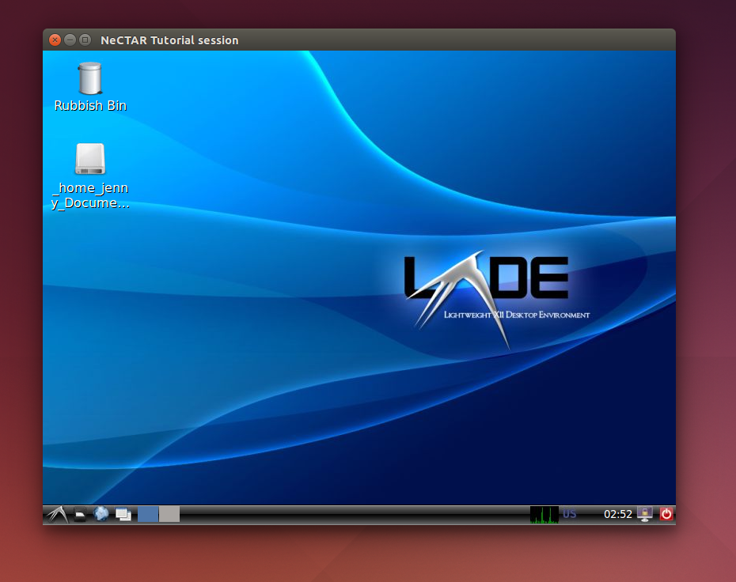
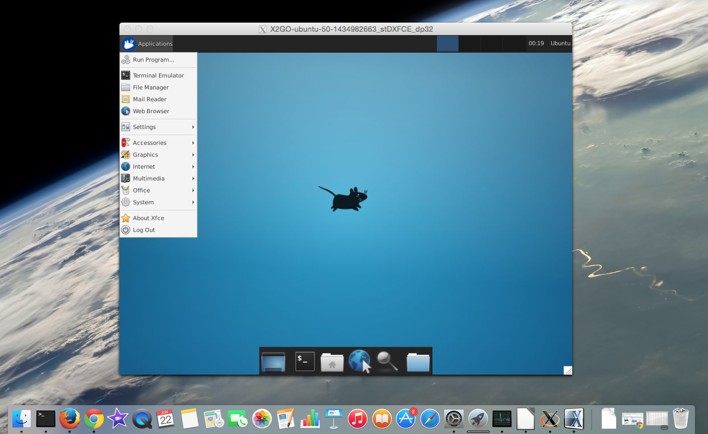
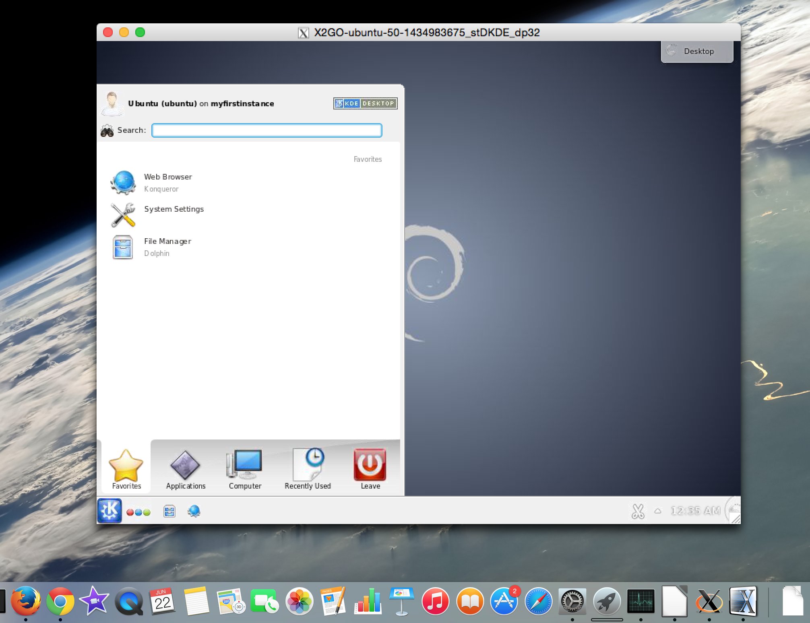

Module 7
Launching and Connecting
Sections of this module:
IntroductionCreate a ssh key
Launching an instance
Connect to the instance
Configuration and control
Connect to a remote desktop
Install a desktop environment
Connect with X2Go
Connect with VNC
Running several desktop environments
Graphical Interfaces on the ssh terminal
Install a web server
Managing storage
Summary
Appendix
View all sections on one page (Printer friendly)
Install a desktop environment
First of all, for either of the options (VNC or X2Go), we need to install a desktop environment on our instance (Remember: The desktop actually runs on the instance, you only get an interactive window to it on your local computer. So we need to install a desktop on your instance).

A desktop environment is what we use to graphically interact with a system (it provides the desktop, windows that open up and symbols you can click on to start a program). Windows and Mac OS have only one desktop environment, but in most Unix-based systems you can choose from several environments. Popular choices are Unity, Gnome and KDE. There are also popular simple and light-weight environments called LXDE, XFCE, Mate and more.
You may install several desktop environments, but you only need to choose one to start with. The following desktop environments are being discussed in this section:
-
LXDE
-
XFCE
-
Gnome
-
KDE
If you are unsure which desktop environment to choose, we recommend you start with LXDE.

Unfortunately, there is no remote desktop solution that supports all desktop environments. The desktop environments which are currently not supported for remote connections are the ones using 3D desktop acceleration. This affects e.g. Unity and Gnome3. All traditional remote desktop approaches (VNC, NX etc.) fail to work with this. Some versions of Gnome can be run in “flashback” Mode (with the 3D acceleration switched off), but that can be a bit tricky to set up and does not necessarily work. We will therefore discuss only the desktop environments which do work.

Note: This tutorial is assuming you are using Ubuntu 14.10 (UTopic), however later versions may also work with the same instructions. When in doubt, links to external documentation are given at the relevant places.
LXDE
This light-weight environment is easy to install and works well for remote connections.

Install the LXDE environment on your instance by typing into your ssh terminal:
sudo apt-get install lxde
XFCE
Install the XFCE environment by typing into your ssh terminal
sudo apt-get install xfce4

GNOME
Gnome will have to be run in Flashback mode to disable the 3D acceleration which is not supported in VNC or X2Go (see for example this official documentation and this one on ubuntuusers.de). X2Go is only compatible with Gnome versions earlier than 3.12 (see x2Go documentation), and ideally earlier than 3.08. The Ubuntu version we use in this tutorial has Gnome 3.12.2, so you cannot use Gnome with X2Go with the Ubuntu version used in this tutorial. However, you may still get Gnome working with VNC by following the instructions below.
You can find out your Gnome version (after you installed it with following instructions) by typing in your ssh command line:
gnome-shell --version
If you are using a version older than 3.12, you cannot use Gnome with X2Go (you may run into trouble with versions older than 3.08 too). However, you may still get it working with VNC.
To install gnome in “flashback mode”, follow these instructions:
-
Install the gnome environment by typing into your ssh terminal:
sudo apt-get install gnome-core
Alternatively, if you want to have some apps like Gimp, LibreOffice etc. pre-installed, instead of the command above, type:
sudo apt-get install gnome
(this will take longer as more packages are downloaded).
Confirm the installation of the package with ‘Y’.
Hit [Enter] to confirm the message that comes up.
Then, you have to select the default display manager. It does not really matter which one you choose. The correct display manager will be started by your remote client anyway. LightDM or GDM are display managers for Gnome. If unsure, just select LightDM. -
To switch on flashback mode , we have to install a package and disable the newer scrollbars. Type:
sudo apt-get install gnome-session-flashback -
[This step is not necessary on the Ubuntu version used in this tutorial]
sudo apt-get purge overlay-scrollbar gsettings set org.gnome.desktop.interface ubuntu-overlay-scrollbars false -
[This step is not necessary on the Ubuntu version in this tutorial]
You might also need the following package on older Ubuntu versions (if in doubt, install it anyway, it should already be installed and then it does nothing)
sudo apt-get install xfonts-base
KDE
Note: Only versions earlier than KDE 5 are supported in X2Go. With the ubuntu version used in this course, you may use KDE.
You can find out your version of KDE (after you installed it with following instructions) with:
kde4-config -v
Install the desktop environment by typing into your ssh terminal:
sudo apt-get install kde-plasma-desktop
Alternatively, if you want to have some more apps pre-installed (this will take longer and take up more space), instead of the command above, type:
sudo apt-get install kde-full
Confirm the installation of the package with ‘Y’. This may take a while as a lot of packages need to be downloaded.
Hit [Enter] to confirm the message about installing KDE. Then, you have to select the default display manager. It does not really matter which one you choose if there are several options. The correct display manager will be started by your remote destkop client anyway. KDM is the display manager for KDE, so if unsure, just select this one.

Other desktop environments
There are also other desktop environments, for example MATE, which we will not discuss further in this tutorial.

 This work is licensed under a
This work is licensed under a